무엇이 전열함을 죽였는가? - 나폴레옹 시대 군함의 수명 이야기
게시: 2016-10-28T23:47:09+09:00
현대적인 군함들의 수명은 대략 몇년일까요 ?
저도 고딩 시절에 한때 해군사관학교 진학이 꿈이라서 관심이 좀 있는 편이었습니다. 그때 들은 이야기가, 당시 우리나라의 주력함인 구축함들은 미군이 2차세계대전 이후 쓰던 것을 60년대에 한국에게 넘겨준 것이라고 했습니다. 그중 인상적인 부분이, 그 통로나 선실의 쇠바닥에는 미끄럼 방지용으로 원래 격자 무늬가 양각으로 새겨져 있었는데, 당시 우리나라 구축함들은 그 격자 무늬가 다 닳아서 매끈매끈 해졌다는 이야기가 있었습니다. 사실인지는 잘 모르겠습니다. 결국 사관학교 안 갔거든요.
네이버 같은 곳을 찾아보니, 돈많은 미국같은 나라는 대개 군함의 수명을 30~40년으로 잡는 모양입니다. 아마 더 오래 쓸 수도 있지만, 유지 보수비도 많이 들고, 또 30~40년전의 무기체계로는 최신예 장비를 갖춘 적군에게 효과적으로 대응하기가 어렵기 때문에 대략 그 정도만 쓰고 퇴역시킨다고 들었습니다. 물론 예외는 매우 많습니다. 가령 미국 항공모함 USS Nimitz는 1972년에 진수되어 1975년에 취역한 뒤 지금까지 현역으로 잘 뛰고 있는데, 기대 수명은 50년으로서 2025년 경에 현역에서 물러날 예정입니다.
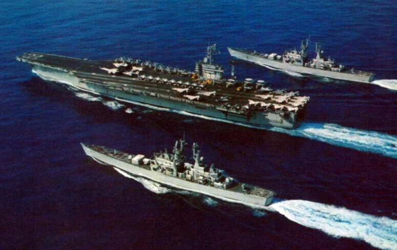
(니미츠 클래스 항모의 네임쉽인 USS Nimitz입니다. 할아버지가 타던 배에 손자가 복무합니다.)
강철로 만든 군함도 30~40년 정도만 쓰는데, 나무로 만든 목조 군함의 경우 몇년을 썼을까요 ? 신기하게도 역시 대략 30~40년 정도를 썼다고 합니다.
1792년부터 1815년 사이, 그러니까 소위 말하는 '나폴레옹 전쟁' 기간 중 영국 해군의 군함 명부를 보면, 각 군함이 언제 진수되어 언제 퇴역했는지가 나옵니다. 가령 1급함, 즉 포 100문짜리 전열함인 HMS Britania 호의 경우, 1762년에 진수되어 1812년에 St. George 호로 이름을 바꾼 기록이 있습니다. 최소한 50년 이상 현역에 있었다는 이야기지요. 2급함인 HMS Atlas 호의 경우 1782년 진수되어 1814년에 '항구 임무'로 전환됩니다. 32년간 현역에 있었다는 겁니다. HMS Princess Royal 호의 경우는 1773년 진수되어 1807년에 폐기 처분됩니다. 34년입니다.
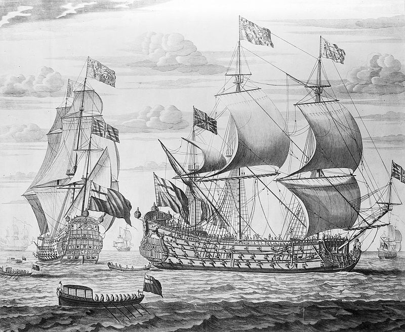
(1670년에 진수된 HMS Prince입니다. 무려 120년간 현역으로 뛰었습니다. 정말 할아버지가 근무하던 군함에서 손자를 거쳐 증손자까지 탈 정도네요.)
영국 해군 역사상 최장 기간 동안 현역으로 있었던 군함은 HMS Royal William 호였습니다. 1670년 HMS Prince라는 이름으로 100문 짜리 전열함, 즉 1급함으로 화려하게 군생활을 시작한 이 군함은, 1719년 HMS Royal William이라는 이름의 84문 짜리 3급함으로 개조됩니다. 결국 1790년까지 무려 120년간을 현역에서 복무합니다. '항구 임무'로 전환된 뒤에도 23년간 더 생존하다가, 1813년 마침내 폐기처분됩니다.
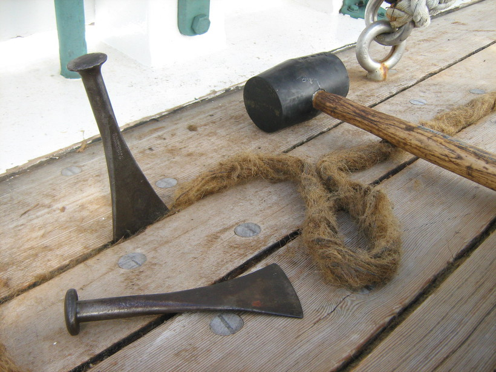
(목재를 짜맞춰 만든 배에서 어떻게 물이 안 샐 수 있을까요 ? 비결은 간단합니다. 물이 그냥 샜습니다 ! 그걸 막기 위해 사진 속에서처럼 그 틈을 저런 뱃밥 oakum을 끌과 망치로 때려 박아 메웠습니다. 그 위에 덧붙여 타르를 칠하기도 했지요.)
이렇게 오래된 배들은 당연히 문제가 많았습니다. 원래 나무로 만든 배들은 항상 물이 샜습니다. 생각해보면 당연한 것이, 컴퓨터도 없고 정밀 공작 기계도 없던 시절에 사람이 손으로 톱질을 해서 만든 목재를 이어붙여 만든 선체에서 목판 사이로 물이 새는 것은 당연한 일입니다. 이런 목판 사이의 틈을 매우기 위해서 무엇을 썼을까요 ? 우리 말로는 보통 뱃밥이라고 번역되는, oakum(오컴)이라는 것을 썼습니다. 이 뱃밥이라는 것은 당시 범선에서 많이 쓰이던 밧줄 중에서 낡고 굳어서 못쓰게 된 것을 풀어낸, 그러니까 삼나무 섬유 부스러기같은 것이었습니다. 이 뱃밥이라는 것을 만드는, 즉 오래된 굳은 밧줄을 풀어내는 일은 일일이 손으로 해야하는, 엄청나게 고되고 손끝이 다 부르트는 중노동이었습니다. 당시 이런 뱃밥 만드는 작업은 극빈층의 아동들이나 죄수들이 주로 했습니다. (과거 우리나라에서는 밤에 가난한 가족들이 모여 앉아 새끼를 꼬았는데, 영국에서는 새끼를 풀었군요 !) 제가 좋아하는 샤프 시리즈에서도, 주인공 샤프가 어린 시절 고아원에서 이런 밧줄을 매일 2미터 이상 풀어헤쳐야 했다고 회상하는 장면이 나옵니다.
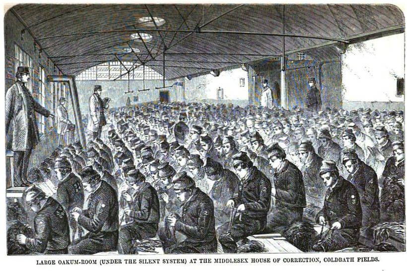
(교화소에 수용된 죄수들이 밧줄을 풀어 뱃밥, 즉 oakum을 만들고 있는 모습입니다.)
이렇게 만들어진 뱃밥은, 조선소에서 사용되었습니다. 배의 선체가 만들어지면, 이 뱃밥을 목판 사이사이에 단단히 그리고 촘촘히 박아넣고, 그 위에 뜨거운 타르를 칠했습니다. 하지만 그래도 물이 샜지요. 그래서 당시 범선들에는 반드시 앞뒤 갑판에 펌프가 달려있었습니다. 바닥에 고인 물을 퍼내야 했던 것이지요. 그러니까 당시 배는 틈 사이로 새들어오는 물의 양이, 선원들이 펌프질해서 퍼내는 물의 양보다 많아지면 침몰하는 것이었습니다. 즉, 선원이 타고 있지 않은 배, 또는 선원들이 농땡이질하는 배는 결국 언젠가는 침몰하는 것이었지요. 또, 오래된 배일 수록, 뱃밥과 타르가 굳어서 배의 목판 사이에서 수압을 이기지 못하고 삐져나오곤 했습니다. 그렇게 해서, 오래된 배일 수록 물이 더 많이 샜던 것입니다. 사정이 이랬기 때문에, 굳이 오래된 배가 아니더라도, 폭풍이 몰아치거나 전투가 한창인 중에도, 담당 사관은 함장에게 '현재 선창에 고인 물의 수위는 3 피트입니다' 라는 식으로 현재의 침수 정도를 주기적으로 보고해야 했습니다. 상황이 나빠지면 전투 중에라도 대포에서 인원을 빼내어 펌프에 충원을 해야 했겠고, 더 손쓸 수 없는 상황까지 가버리면 '전원 권총과 검을 준비하라. 적함을 탈취한다' 라고 명령을 내려야 했을 겁니다.
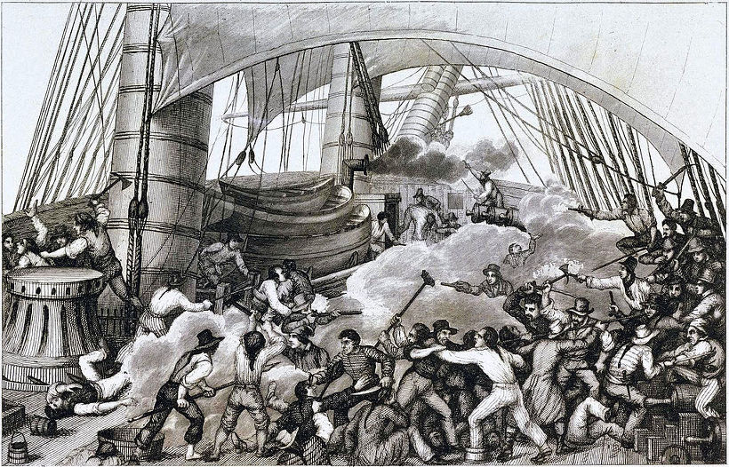
(당시의 목재 범선은 어지간한 포격으로는 침몰하지 않았기 때문에 해상 전투는 대개 근접 백병전으로 결정이 났습니다. 대포알이 낮게 날아오는 경우도 바다 위를 물수제비처럼 통통 튀어 홀수선 위를 때리는 경우가 대부분이었고, 가끔 흘수선 아래를 강타한다고 해도 물 속에서는 대포알의 속도가 크게 줄었으므로 위력이 강하지는 않았기 때문입니다. 물론, 가끔 흘수선 아래를 강하게 때린 대포알 때문에, 목판 사이의 틈이 더 벌어지거나 아예 구멍이 뚫리는 경우도 가끔 발생했습니다. 그런 경우 저런 백병전이 훨씬 더 치열하게 전개되었겠지요. 두 척이 엉겨 붙었는데, 싸움이 끝난 뒤에는 한 척만 떠있을 테니까요.)
심한 경우, 이렇게 물이 새는 것이 심해져 배가 대양에서 침몰하는 경우도 가끔 있었습니다. 암초에 부딪히거나 해안가에 좌초한 것도 아닌데, 퍼내는 물보다 새어 들어오는 물이 더 많아서 결국 침몰하는 것을 침수 침몰(foundering)이라고 합니다. 대개 이런 침수 침몰은 폭풍을 만난 경우에 발생했습니다. 18세기 ~ 19세기 중반까지의 표준 전열함이라고 할 수 있는 74문짜리 3급 전함은 대개 배수량 약 1700~1800톤 정도의 크기였는데, 나무로 만들고 바람으로 움직이는 범선 구조상 이 정도의 크기가 속도나 항행성, 내구력, 그리고 경제성에서 가장 좋았기 떄문이었습니다. 당시의 함대전은 이런 3급 이상의 전열함들만 전열에 낄 수 있었고, 그 이하의 프리깃함 등은 함대전에서는 깃발 신호 중계기 정도의 역할만 수행할 수 있었습니다. 그런데 이런 귀한 전열함이 적의 대포가 아닌 바닥에서 샌 물 때문에 침몰한다면 정말 비극이겠지요. 그런 일을 막기 위한 노력 중의 하나로, 이 시대의 군함 바닥은 구리판으로 덮혀 있었습니다. 구리판은 지금도 비싼 물건입니다만, 당시엔 더욱 비싼 자재였습니다. 따라서 국왕의 군함 외에는, 돈 많은 무역 회사가 주문한 비싼 선박에만 이런 구리판을 덮을 수 있었습니다. 따라서 이렇게 바닥에 구리판을 덮었다는 것은 바닥 뿐만 아니라 다른 부분도 고급 자재를 써서 튼튼하게 만들었으므로 믿을 수 있다는 뜻이었습니다. 이런 점들 때문에 지금도 copper-bottomed 라는 단어는 '안전하고 믿을 수 있는' 이라는 뜻의 형용사로 쓰입니다. 이렇게 목조 군함의 홀수선 아래 부분을 구리로 덮는 것을, 흔히 따깨비나 해초가 달라붙어 군함 속력이 느려지는 것을 막기 위한 것으로 보는 경우도 있습니다. 그러나 실은 그보다는 그런 것들로 인해 뱃바닥의 치명적인 부식 손상을 막기 위한 것이었다고 합니다. 어차피 구리판으로 덮건 안 덮건 따깨비와 해초는 달라 붙었거든요.
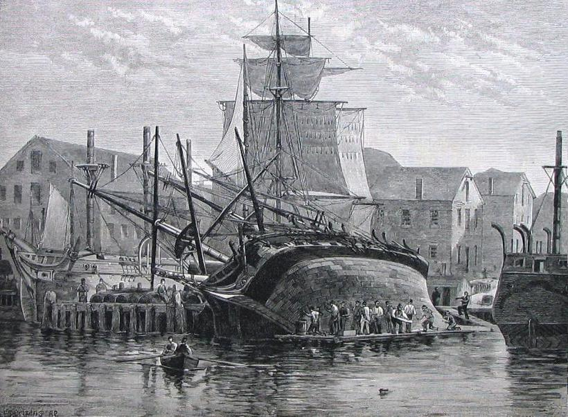
(배 바닥에 달라 붙은 따깨비와 해초 등을 걷어내고 바닥재를 손보는 작업을 careening이라고 합니다. 당시엔 드라이독이 없었으므로, 저렇게 적절한 해변가에서 썰물 때 좌초할 위치에 배를 위치시켜 놓았다가 물이 빠져 배가 기울어지면 작업을 했습니다. 이렇게 careening을 할 만한 해변를 가리키는 단어까지 있는데, careenage라고 합니다. 닻을 내릴 만한 곳을 anchorage라고 하는 것과 비슷하지요. 알래스카의 앵커리지도 아마 그런 뜻에서 비롯된 것 같습니다.)
이런 노력에도 불구하고, 가끔씩 3급 이상의 대형 전열함들도 침수 침몰(foundering)을 당하기도 했습니다. 나폴레옹 전쟁 당시 영국 해군 장교 잭 오브리와 군의관인 스티븐 머투어린의 모험을 그린 Patrick O'Brian의 명작 해양 소설 시리즈 중 하나인 Desolation Island 편에 그런 위기가 자세히 묘사되어 있습니다. 이 소설 속에서, 1811년 아프리카 최남단 희망봉을 돌아 호주로 향하던 잭 오브리의 전함 HMS Leopard가 한밤중에 빙산에 부딪히는 바람에 물이 거세게 새들어오기 시작한 것입니다. 깜깜한 밤중에 난리가 났는데, 일이 이렇게 되자 모든 선원들이 교대로 펌프에 붙어 거세게 물을 퍼내야 했습니다. 보통 이런 육체 노동은 당연히 수병들의 몫이지만 이런 위기 상황에서는 장교고 뭐고, 심지어 작은 체구의 군의관인 머투어린까지도 순번을 정해 온 힘을 다해 펌프질 하는데 동원됩니다. 그 결론이 어떻게 나는지는 스포일러이므로 여기서는 생략...
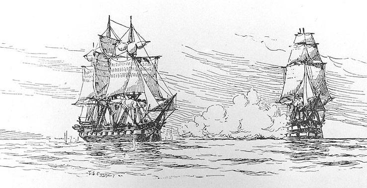
(HMS Leopard는 실존하는 군함으로서, 50문의 대포를 갖춘 약 1천톤 정도 되는, 프리깃함보다는 크고 전함보다는 작은 제4급함이었습니다. 이 군함이 유명해진 것은 1807년 중립국인 미국 프리깃함 USS Chesapeake를 검문하기 위해 급습하여 항복을 받아낸 뒤, 영국 해군 탈영병 출신인 미해군 수병 4명을 체포한 뒤 교수형에 처한 사건 때문이었습니다. 소설 속과는 약간 다르게, 이 배는 결국 1814년 캐나다 해변가에서 좌초되어 파선되었습니다. 위 그림에서 왼쪽이 체셔피크 호이고, 오른쪽에서 기습적인 일제 포격을 퍼붓는 것이 레오파드 호입니다.)
하지만 위에서 언급했듯이, 대부분의 침수 침몰은 폭풍 등 거센 파도가 몰아치는 상황에서 발생했습니다. 목조 범선이 거센 파도에 버티지 못 하고 침수되는 주된 이유는, 못으로 목판을 접합하고 그 틈을 뱃밥과 타르로 틀어막아 놓은 것이 거센 파도 속에서 버티지 못 하고 틈이 벌어졌기 때문이었습니다. 워낙 거센 폭풍 속에서는 현대적인 항해 장비를갖춘 강철 화물선도 일년에 몇 척씩 침몰하고 있으므로 당시의 목조 범선으로서는 불가항력이라고도 할 수 있습니다. 그러나 배가 좀더 튼튼하게 만들어지고 잘 유지 정비되고 있었다면 무사히 견딜 수 있는 경우도 많았겠지요. 그러나 대서양이나 인도양 등, 망망대해에서 소식이 끊긴 전함들이 과연 어떤 상황 속에서 침수 침몰 되었는지, 그것이 배가 부실하게 건조되거나 유지 정비가 불량했던 것이 원인이었는지는 알 수가 없었습니다.
가령 HMS Blenheim이라는 영국 전열함은 1755년 90문의 포를 갖춘 1800톤의 2급 전열함으로 건조되었다가, 1801~1802년 사이에 74문의 포를 갖춘 3급 전열함으로 개조된 배였습니다. 이 블렌하임 호는 1807년 프리깃함 HMS Java 및 슬룹함 HMS Harrier와 함께 인도 마드라스(Madras)에서 출항했다가 인도양에서 만난 폭풍 속에서 자바 호와 함께 침수 침몰된 것으로 추정됩니다. 블렌하임 호에 승선했던 590명, 그리고 자바 호의 280명의 수병들은 모두 돌아오지 못 했지요. 추측하기로는 블렌하임 호가 무려 52년이나 된 낡은 배라서 폭풍을 견디지 못 하고 침몰하기 시작했는데, 자바 호가 폭풍 속에서 그 수병들을 구조하다가 함께 변을 당한 것이 아닌가 한답니다.
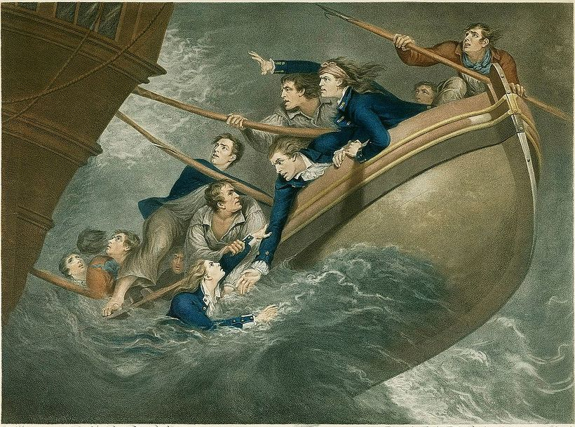
(이 그림은 또다른 영국 전함 HMS Centaur의 침몰 및 생존 선원의 탈출을 그린 것입니다. 이 배는 1782년 캐나다 연안 뉴 펀들랜드에서 허리케인을 만나 침수 침몰했습니다. 400명의 수병이 목숨을 잃었는데, 선장인 존 잉글필드는 11명의 생존 선원을 저런 쪽배에 태우고, 아무런 해도나 나침반 없이 무려 16일 동안 항해하여 대서양 한 가운데인 아조레스 제도에 도착했습니다. 항해를 시작할 때 저 배에 물이라고는 딱 2병이 있었다고 합니다.)
이런 문제는 굳이 낡은 군함이 아니더라도, 뇌물과 부정행위로 범벅이 된 해군 건조창 탓에, 불과 20~30년된 군함들도 이런 침수 침몰 위험에 노출되어 있었다는 점입니다.
Post Captain by Patrick O'Brian (배경: 1803년 영불 해협) ----------------
(함장 잭 오브리의 함장실에서 잭과 스티븐이 이야기를 나눕니다.)
"여기 자네가 관심있어할 만 한 것이 있네. 자네 '강도 볼트(robber-bolt)'라는 거 들어본 적 있나 ?"
"아니, 없네."
"이게 그거라네." 그는 한쪽 끝에 커다란 너트가 달린, 짧고 굵은 구리 봉을 내밀었다. "자네도 알겠지만, 볼트라는 것은 굵은 목재판을 관통해서 선체 접합에 사용되는 것이라네. 가장 좋은 재료는 구리지. 녹이 슬지 않으니까. 구리는 비싼 물건이라네. 아마 2 파운드의 구리, 즉 짧은 구리 볼트 한 개면 조선소 기술자의 하루 일당은 될 거야. 만약 자네가 아주 나쁜 악당이라면, 볼트의 중간은 잘라내고, 양쪽 끝만 선체에 박아넣어서 마치 멀쩡한 접합부인 것처럼 해놓고, 그 잘라낸 구리 볼트를 팔아서 돈을 챙길 수 있네. 실제로 선체가 벌어지기 전에는 아무도 발견할 수 없어. 그리고 선체가 벌어지는 것은 배가 세상 저 반대편 바다에 나가 있을 때겠지. 게다가 배가 그런 식으로 침수 침몰하면, 아무 흔적이나 형체도 남기지 않는다네."
"이 사실을 언제 알았나 ?"
"난 처음부터 의심했었네. 힉맨 조선소에서 만들어졌다는 것을 알고는 이 배가 아주 형편없이 만들어졌을 거라는 것을 짐작했었어. 게다가 그 조선소의 역겨운 인간들은 자재를 아주 몰염치하게 다루지. 하지만 확신한 것은 바로 며칠 전이야. 이제 이 폴리크레스트 호가 바다에 나와서 좀 힘을 받으니까, 그 사실이 분명해지더군. 난 이걸 선체에서 내 손가락으로 뽑아낼 수 있었다네."
"적절한 기관에 이 사실을 알릴 수 없었나 ?"
"할 수 있었지. 조사를 요청한 뒤 한달이나 6주 정도 기다릴 수 있었어. 하지만 그러고난 뒤에 난 어디로 가겠나 ? 이건 조선소의 일이고, 군함 상태가 어떻건 간에 검수를 통과한다거나, 보잘 것 없는 서기들이 그런 일들을 꾸민다는 뭐 그런 음울한 이야기를 많이 듣는다네. 아니. 난 그냥 이 배를 몰고 나오고 싶었어. 사실 여태까지는 이 배가 풍랑에도 잘 견뎌왔으니까."
--------------------------------------------------------------------
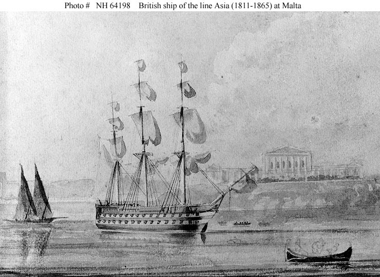
(영국 해군의 자랑...이 아니라 수치였던 40척의 도적들, 뱅고어 급 전함 중 하나인 HMS Asia 입니다.)
원래, 당시 영국 해군 군함들 중 좋은 것들은 대개 프랑스 해군이나 스페인 해군에서 나포한 것들이었고, 영국 해군 조선창에서 만든 배들은 항행성이나 내구성 면에서 매우 실망스러웠다고 합니다. 특히 나폴레옹 전쟁 기간 중인 1806년부터 민간 조선소와 계약을 맺고 1809년부터 진수되기 시작한 뱅고어 급(Vengeur-class) 전열함 40척은, 단일 급으로는 가장 많은 척수가 건조된 최대 규모의 전열함 프로젝트였습니다. 그러나 그 규모에 비례하여 방산 비리도 최대 규모급으로 심각했다고 합니다. 결국 그 전열함들의 품질이나 성능이 그야말로 영국 해군의 수치로 여겨져서, '아리바바와 40인의 도적'에 빗대어 '40척의 도적'이라는 별명으로 불리웠습니다. 당시 해군 인사들은 이 뱅고어급 전함들의 문제를 탐욕스러운 민간 조선소에 무분별하게 위탁 건조한 것이 가장 큰 원인이라고 비난했다고 합니다. 그러나 아이러니컬하게도, 이 40 척의 도적 전열함들 중 침수로 인해 침몰로 최후를 맞은 전함들은 단 1 척도 없었습니다. 그렇다고 이 전열함들이 알고 보니 우수한 전열함이었다는 이야기는 아닙니다. 그 전열함들의 성능과 내구성에 대해 악명이 자자했으므로, 그만큼 해군이 더 조심조심 운용했던 결과라고 할 수 있습니다. 이 전열함들 중 주요 해전에 참여하여 이름을 빛낸 것들은 몇 척 없고, 대부분 호위 등의 평이한 임무를 맡아 조용히 죽어 지내다가 최후를 맞이했습니다. 가늘고 길게 산다는 말이 딱 맞아서, 이들 중 일부 전함은 증기 기관을 탑재한 부유 포대(floating battery, blockship)으로 개조되어 1850년대의 크림 전쟁에 참전하기도 했습니다.
이런 목조 군함들 중, 놀랍게도 현재도 남아있는 군함이 있습니다. 바로 넬슨 제독이 트라팔가 해전 때 기함으로 사용했던 HMS Victory 입니다. 1765년 당대 최고의 군함 설계자인 토마스 슬레이드 경에 의해 진수된 이 100문짜리 1급 전함은, 1805년 넬슨과 함께 트라팔가 해전을 치른 뒤, 1822년에 가서야 헐크선으로 전환됩니다. 무려 57년간의 현역 생활이었습니다. 이 상태로 소금물에 바닥을 담근 채 1922년까지 있다가, 그 해에 드라이 독으로 옮겨져서 오늘날까지 보존되고 있습니다.
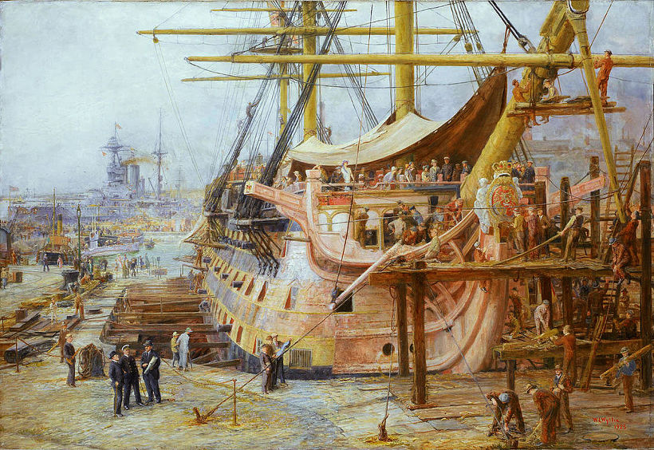
(위 그림은 1925년 드라이독에서 복원 작업이 한창인 HMS Victory의 모습입니다. 빅토리 호는 1812년 현역에서 물러난 뒤 아무 하는 일 없이 항구에서 자리만 차지하고 있었는데, 1831년에는 해체 명령이 떨어지기도 했답니다. 그러나 빅토리 호의 해체 명령서에 서명을 하고 왔다는 해군성 장관의 말에 그 장관 부인이 눈물을 터뜨리며 당장 사무실로 돌아가 그 명령을 철회하라고 조른 덕분에 오늘날 빅토리 호는 영국의 주요 관광 자원이 되고 있습니다.)
당시 군함들은 모두 오크, 즉 떡갈나무로 만들었습니다. 군함을 만드는데 사용되는 떡갈나무의 평균 나이는 대략 80~100년이었습니다. 떡갈나무라고 아무거나 다 배에 쓸 수 있는 것도 아니었습니다. 특히 배에서 구조역학적으로 아주 중요한 역할을 하는 '무릎(knee)'이라고 하는 ㄱ자 곡재는 워낙 힘을 크게 받는 부분이라서 그냥 직선의 나무를 깎아서 만들면 충분한 강도를 낼 수 없었고, 나무의 줄기와 가지가 자연스럽게 원하는 각도로 자란 것을 골라 써야 했습니다. 그러니 자연히 구하기도 어려웠고, 값도 비쌌겠지요. 영국이 밀림이라서 100년짜리 떡갈나무가 동네마다 빽빽히 들어서 있는 것도 아니었고, 또 영국은 농경지 확장 뿐만 아니라 제철업 때문에 목재가 연료로 많아 소모되어 숲이 점점 줄어들고 있었습니다. 한마디로 목재의 공급이 부족했다는 뜻이지요. 결국 군함의 자재 또는 각종 건축 및 가구용 목재는 대개 발트해 지역 국가들, 특히 스웨덴 등으로부터 수입했습니다. 그래서 영국은 스웨덴과는 항상 우호적인 관계를 유지하기 위해 노력했고, 나폴레옹이 스웨덴 쪽에 손을 뻗칠 때 영국이 특히 민감하게 반응했습니다.
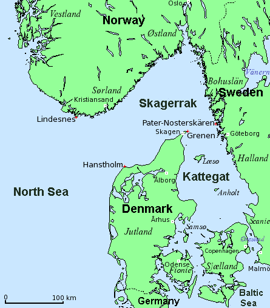
(저 지도 상에서 헬싱괴르와 헬싱보리 사이의 좁은 해협을 보십시요. 저 곳에 장거리 포만 배치하면 해협을 완전히 봉쇄할 수 있습니다. 물론, 나폴레옹 시대의 대포로는 사정거리와 화력 문제로 완전 봉쇄는 어려웠지요.)
발트해의 지리적 특성은 목재 수입에 있어 더더욱 스웨덴과 영국의 관계를 특수하게 만들었습니다. 지도를 보면 발트해에서 북해로 빠져 나오려면 덴마크 젤란트 섬과 스웨덴 사이의 외레순 해협을 반드시 통과해야 했습니다. 영국으로 오는 스웨덴 목재 수송선 대부분도 이 해협을 통과했고요. 당시 외레순 해협은 적어도 영국에게는 오늘날 유조선들의 주요 통과 해협인 호르무즈 해협과도 같은 존재였습니다.
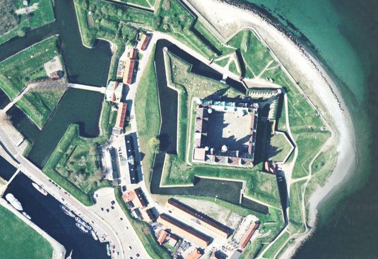
(당연히 저 좁은 해협 양안에는 튼튼한 요새가 들어섰습니다. 그 덴마크 쪽인 헬싱괴르에 있는 크론보르 Kronborg 성입니다. 셰익스피어의 비극 햄릿의 배경이 된 성이지요.)
18세기 말, 1척의 3급함, 즉 74문의 대포를 탑재한 전열함을 건조하기 위해서는 대략 5만 파운드의 비용이 들었다고 합니다. 그 액수를 현재 피부로 느껴지는 가치로 환산하기 위해, 금 1g의 현재가를 약 4만7천원으로 가정한다면, 5만 파운드는 대략 145억 정도에 해당합니다. 현재 우리 해군의 주력함인 KDX-3의 경우 약 5천억~1조원이 든다고 하지요. 대신 당시 영국 해군은 이런 군함을 100여 척 정도 유지하고 있었습니다. 아마 우리나라 현재 해군은 KDX-2급 함정도 10척 미만일 겁니다. (구체적인 숫자는 저도 잘 모릅니다 !) 하긴, 예전에 이런 군함 10척이 하던 일을 이런 현대적 군함 1척이 하고도 남겠지요.
Source : https://en.wikipedia.org/wiki/List_of_ships_of_the_line_of_the_Royal_Navy
https://en.wikipedia.org/wiki/Oakum
https://en.wikipedia.org/wiki/Vengeur-class_ship_of_the_line
https://en.wikipedia.org/wiki/Copper_sheathing
http://dictionary.cambridge.org/dictionary/english/copper-bottomed
https://en.wikipedia.org/wiki/Royal_Charlotte_(1789_ship)
https://en.wikipedia.org/wiki/HMS_Centaur_(1759)
https://en.wikipedia.org/wiki/Chesapeake%E2%80%93Leopard_Affair
https://en.wikipedia.org/wiki/HMS_Leopard_(1790)
https://en.wikipedia.org/wiki/HMS_Blenheim_(1761)